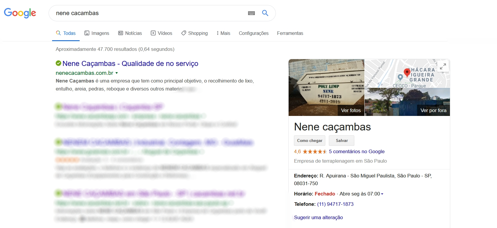
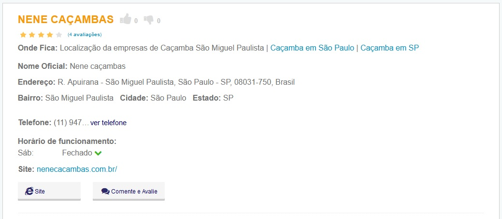

Nene Caçambas é uma empresa que tem como principal objetivo, o recolhimento de lixo, entulho, areia, pedras, reboque e diversos outros materiais que recolhemos atravez dos nossos caminhões e nossas caçambas. A Nene Caçambas, está nesse ramo a certa de 10 anos, e com isso, oferecemos um trabalho de qualidade por nossa experiencia de serviço, Juntamente com nossos preços extremamentes justos com o cliente, vizando uma experiencia digna e de qualidade para com o consumidor de nossos serviços. As caçambas das nossas empresas, são caçambas cadastradas pela prefeitura, que podem ser visualizadas no site da prefeitura
Alem disso, somos uma empresa com um rating de 4.6 estrelas na analises de usuario no Google(no atual momento), mostrando a nossa competencia como empresa prestadora de serviços, pode ser visualizado na seguinte imagem:

Tambem no website Caçambas.net Somos uma empresa avaliada em 4 estrelas, ou seja, Realmente temos o certificado de competencia.
